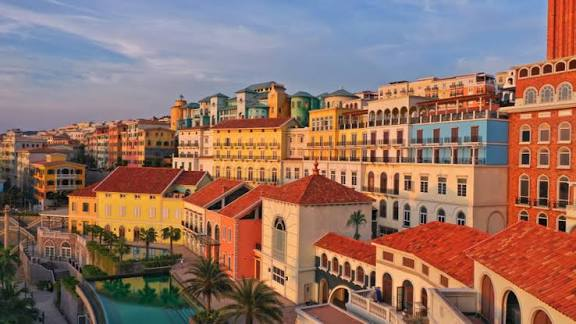
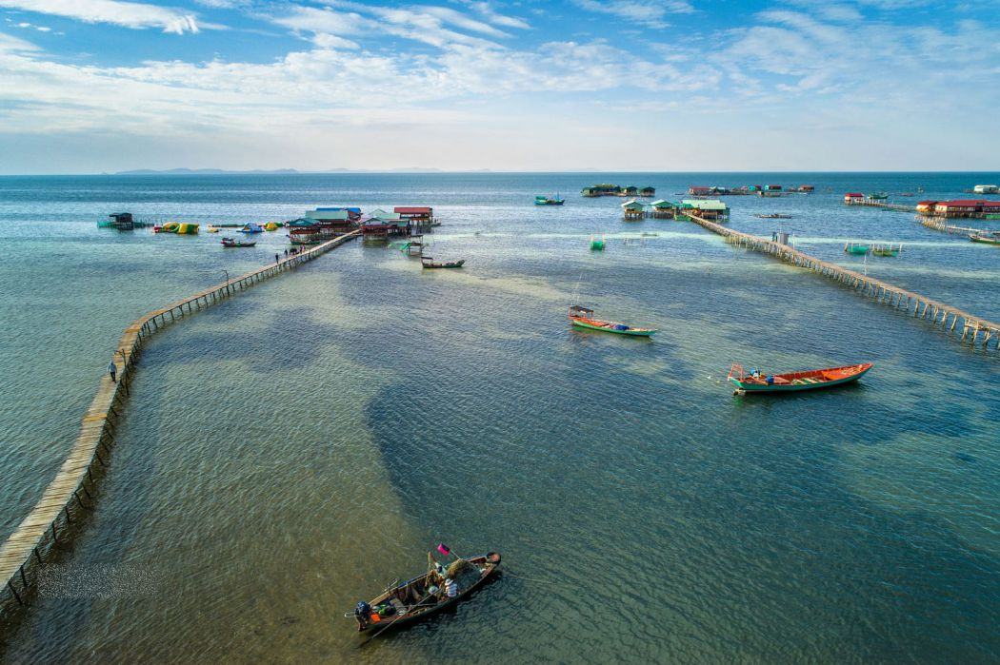
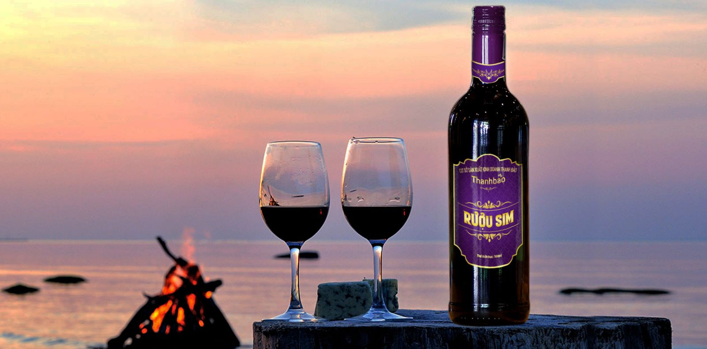
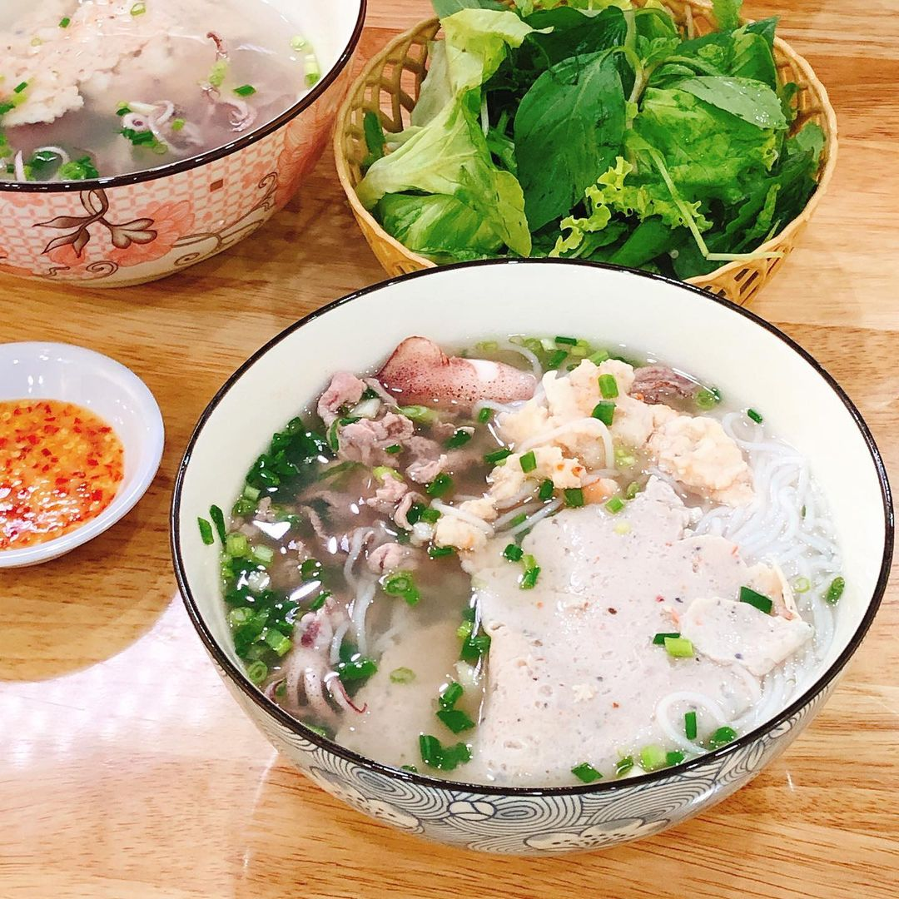
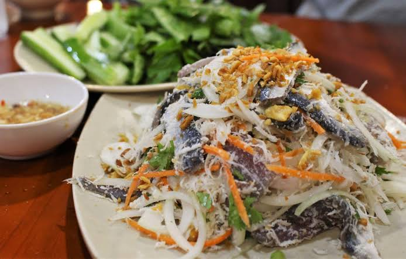
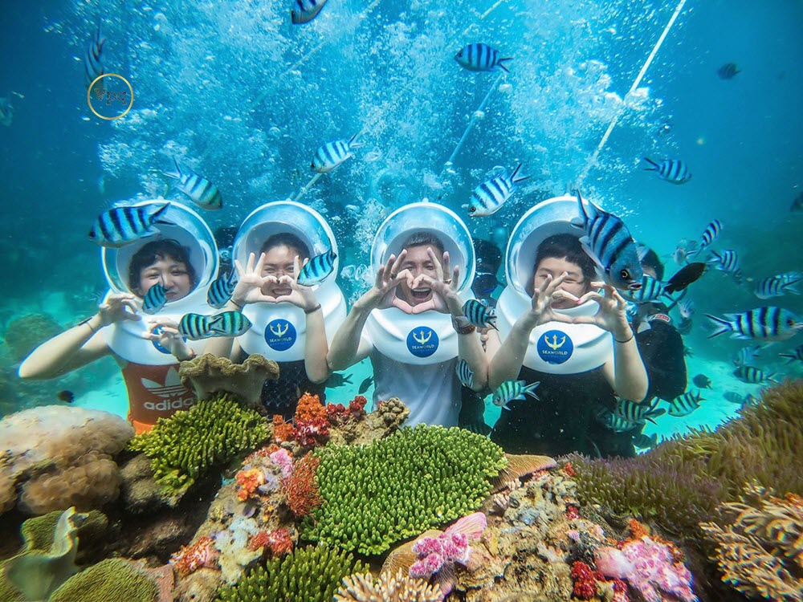
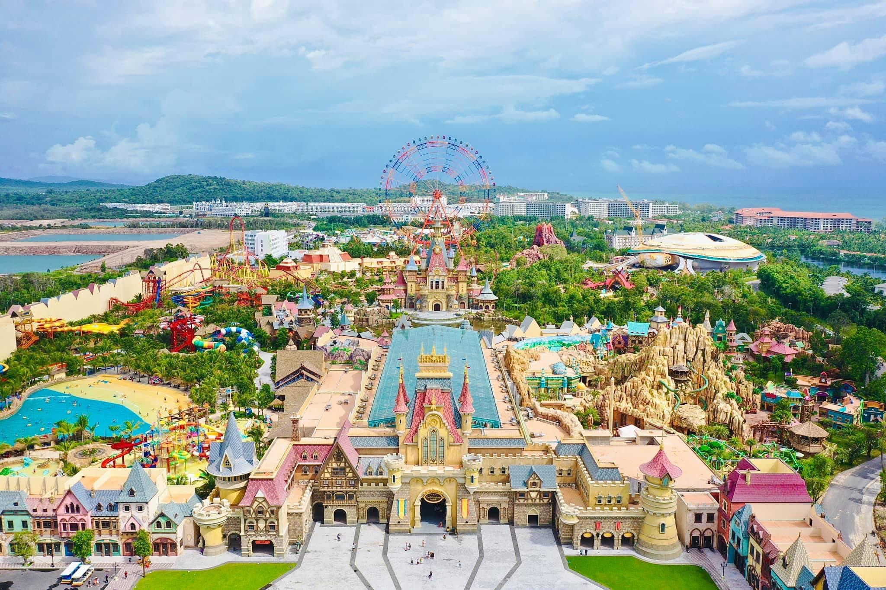
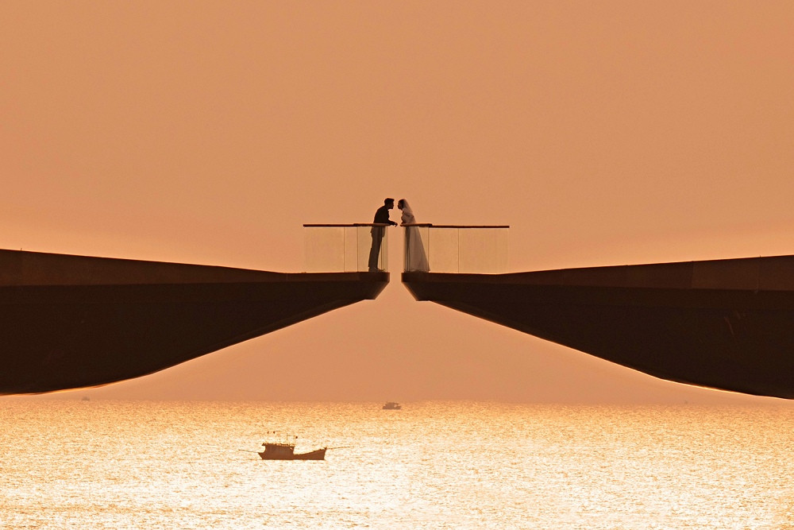
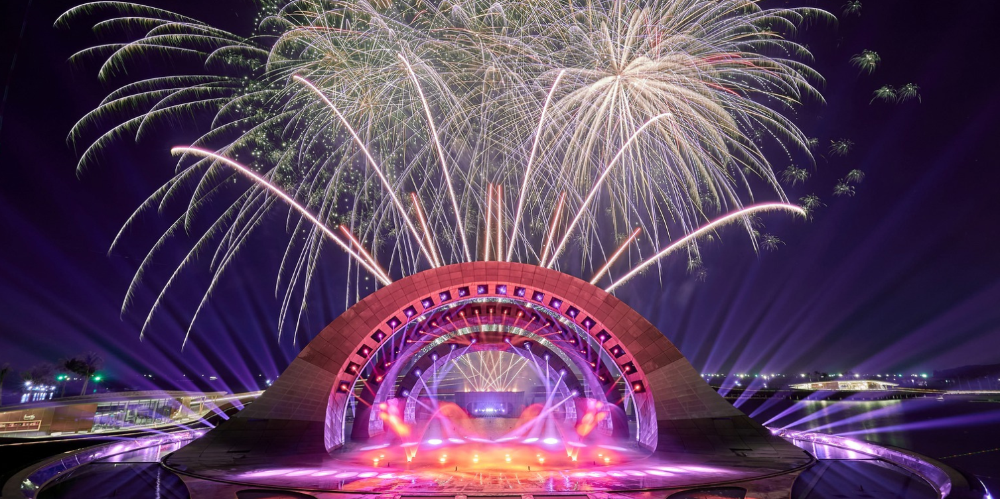
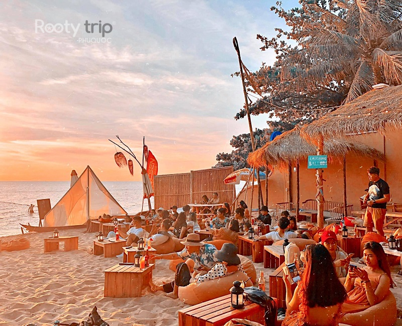

Nguồn: Hicanha & VietnamplusCảnh đẹp - Thiên đường nghỉ dưỡng
Phú Quốc - "Đảo Ngọc" sở hữu những bãi biển cát trắng, nước trong vắt như Bãi Sao, Bãi Khem. Đây là thiên đường nghỉ dưỡng yên bình với những rặng dừa xanh mướt. Những điểm đến nổi bật gồm:
- Sunset Town (Thị trấn Hoàng Hôn): Điểm check-in mang phong cách Địa Trung Hải, nơi ngắm hoàng hôn đẹp nhất Việt Nam với sự chuyển sắc ngoạn mục từ cam, đỏ sang tím.
- Làng chài Rạch Vẹm: Cách trung tâm hơn 20km, nơi đây là "vương quốc sao biển đỏ" bên những cầu gỗ và nhà bè mộc mạc. Thời điểm lý tưởng nhất để ghé thăm là từ tháng 11 đến tháng 4 (mùa khô).



Nguồn: Kkday & Vnexpress & VietgoingMón ngon - Tinh túy ẩm thực đảo ngọc
Ẩm thực Phú Quốc là sự hòa quyện tuyệt vời của biển cả. Đừng bỏ lỡ các món hải sản tươi sống, nhum nướng mỡ hành tại chợ đêm, hay nước mắm trứ danh. Đặc biệt nhất là:
1. Rượu Sim
Thức uống đặc trưng làm từ quả sim rừng chín mọng. Phổ biến nhất là Hồng sim (ngọt thanh, màu tím đẹp) và Tiểu sim (thơm nồng, vị chát nhẹ). Đây là món quà tinh túy từ thiên nhiên Đảo Ngọc.
Địa chỉ: Rượu sim Bảy Gáo (142, đường 30/4) hoặc Thành Long (Ấp Suối Mây).
2. Bún Quậy
Trải nghiệm ẩm thực "tự phục vụ" độc đáo với sợi bún làm tại chỗ. Điểm nhấn là chả tôm cá tươi rói quyện trong nước dùng thanh ngọt và bát nước chấm tự pha "quậy" đều tay, tạo nên hương vị đậm đà khó quên.
Địa chỉ: Bún quậy Kiến Xây (28 Bạch Đằng, Dương Đông).
3. Gỏi Cá Trích
Món ăn dân dã nhưng đầy tinh tế, kết hợp thịt cá tươi sống với hành tây, rau thơm, dừa nạo và đậu phộng. Cuộn tất cả trong bánh tráng, chấm cùng nước mắm chua ngọt để cảm nhận trọn vẹn vị biển.
Gợi ý: Nên thử tại các nhà hàng ven biển để đảm bảo độ tươi ngon nhất.


Nguồn: John's tourHoạt động - Khám phá đại dương
Lặn ngắm san hô:
Khám phá "khu vườn đại dương" sống động tại các đảo phía Nam (Hòn Móng Tay, Gầm Ghì, Mây Rút).
- Hình thức: Lặn ống thở (snorkeling), lặn bình khí (scuba diving), đi bộ dưới biển (sea walker).
- Thời điểm: Tháng 10 - tháng 4 (thời điểm nước trong và đẹp nhất).
- Ưu điểm: An toàn, đầy đủ trang bị, phù hợp cho cả người mới bắt đầu.
VinWonders Phú Quốc:
Công viên chủ đề quy mô lớn tại Bắc đảo, điểm đến lý tưởng cho mọi lứa tuổi.
- Trải nghiệm: Tổ hợp trò chơi cảm giác mạnh, công viên nước, thủy cung khổng lồ.
- Khám phá: Các khu chủ đề đặc sắc (Châu Âu, Cổ tích, Làng Viking).
- Điểm nhấn: Các show diễn nghệ thuật hoành tráng vào buổi tối.



Nguồn: RootytripĐiểm check-in mới 2026 - Thiên đường trải nghiệm
Cầu Hôn (Kiss Bridge)
Biểu tượng kiến trúc lãng mạn tại Nam đảo, nơi hai nhánh cầu vươn mình ra đại dương nhưng không chạm nhau - tượng trưng cho sự kết nối và tình yêu.
Trải nghiệm: Điểm check-in không thể bỏ lỡ, đặc biệt đẹp nhất khi hoàng hôn buông xuống.
Show “Kiss of The Sea”
Đại tiệc nghệ thuật đa phương tiện đẳng cấp tại Sunset Town, kết hợp công nghệ ánh sáng, laser, nhạc nước, lửa và hiệu ứng 3D trên nền biển đêm.
Lịch diễn: 21:00 - 21:30 hằng ngày (trừ thứ Ba).
Ocsen Beach Bar & Club
Điểm dừng chân lý tưởng trên Bãi Trường để "chill" cùng hoàng hôn.
Phong cách: Không gian mở với ghế lười màu cam đặc trưng trên cát.
Trải nghiệm: Thưởng thức nhạc DJ, các màn biểu diễn lửa và không khí tiệc tùng sôi động về đêm.